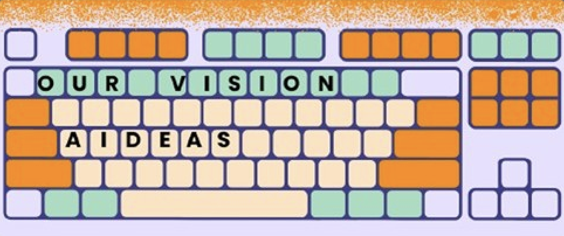

OUR VISION

In today’s world, artificial intelligence and technology are advancing rapidly, making access to information easier than ever. However, finding the right information, thinking critically, and using knowledge responsibly remain.
That’s why our goal is not just to teach students how to research but to help them develop research habits, enhance their critical thinking skills, and build conscious learning processes.
Aideas also support academic development by teaching proper source usage, citation, and how to avoid plagiarism. These skills not only enhance their school performance but also prepare them to become conscious individuals in their academic and professional lives.
This program is more than just a place for acquiring knowledge; it serves as a roadmap that encourages curiosity, strengthens analytical thinking, fosters critical perspectives.
MEET THE TEAM
The folks behind Aideas have taught the popular EdTech platforms.

Ece Yavuz